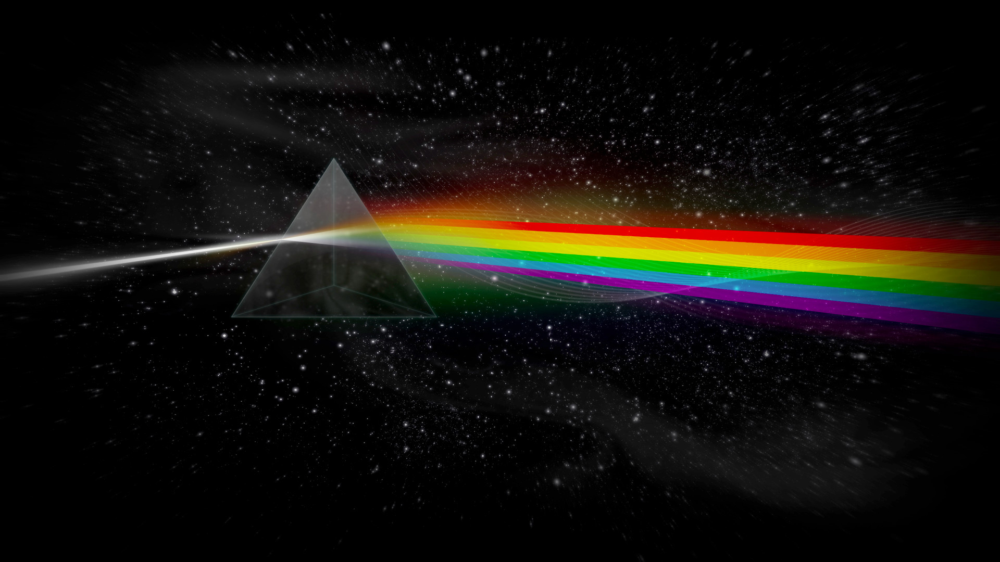

Eu adoro as músicas do Red Hot Chili Peppers! Sua mistura única de rock e energia sempre me faz vibrar. Desde os riffs de guitarra envolventes até as letras emocionantes, cada música me transporta para um estado de pura alegria e empolgação. O Red Hot Chili Peppers é definitivamente uma das minhas bandas favoritas.
A voz de Eddie Vedder é incrível! Sua capacidade de transmitir emoções profundas é impressionante. E claro, não posso deixar de mencionar que também adoro Pearl Jam. Sua mistura de rock alternativo e letras significativas é viciante. A voz icônica de Vedder combinada com a paixão em suas músicas é simplesmente incrível.
Aprecio muito o Pink Floyd e os solos de David Gilmour. Sua habilidade técnica e estilo musical único são impressionantes. Gosto de como ele consegue expressar suas ideias musicais através de suas notas precisas e melódicas.